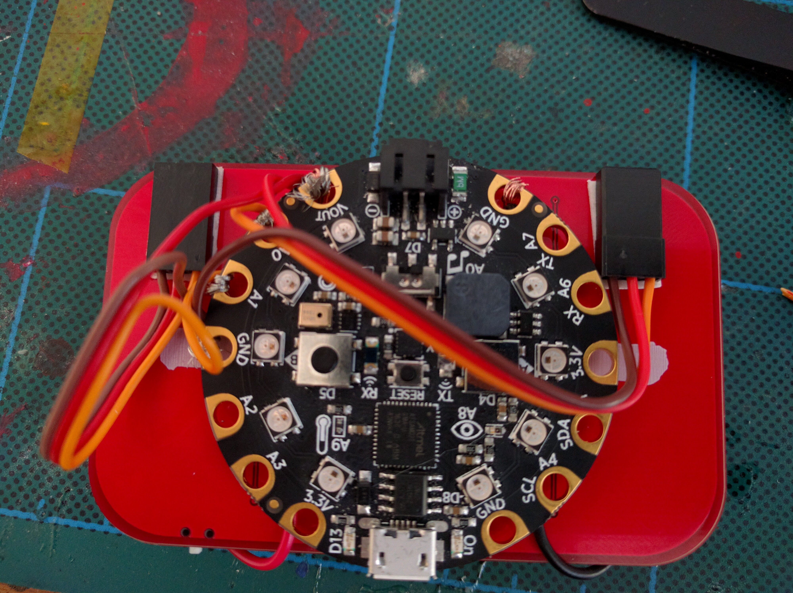

Working Prototype (kinda)¶
Published on 2018-10-20 in Electronic Barrette Hub.
I have an estimation for the shipping of the PCBs, and it doesn’t look good: they will arrive Monday, 3h before the deadline for the prize. So I decided to go and cobble together a working prototype from what I have at hand right now. It’s not pretty, but it works, and I can show off some of the possible uses for such a hub in the video, so it should be good enough. I will still attempt to assemble and test the actual prototype as soon as the PCBs arrive, but I can’t promise I will make the deadline with that, and I will certainly have no time to shoot the video afterwards.
I re-used the PCBs for the Pulse Barrette — the simple blinking LED prototype that I made initially — and a lot of two-sided tape. I also used hobby servo plugs for connectors, and only wired two pins (the final version will use all 8 pins). It looks like this:
I also updated the BOM and the build instructions. Of course, those will change as soon as the final prototype is ready, but since I don’t have the PCBs, I can’t make the photos, etc. — so you have the crappy prototype instructions for now.
You know, it may actually be more fun to build it like this, even if it looks bad.